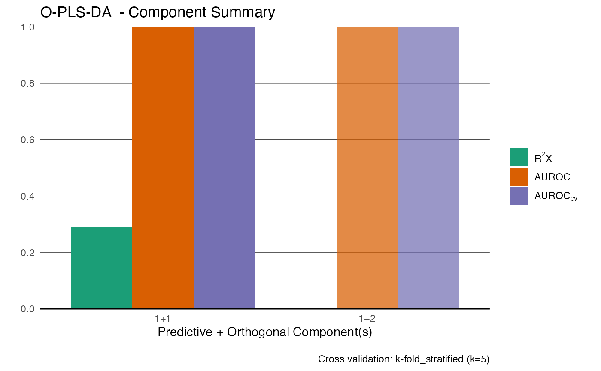
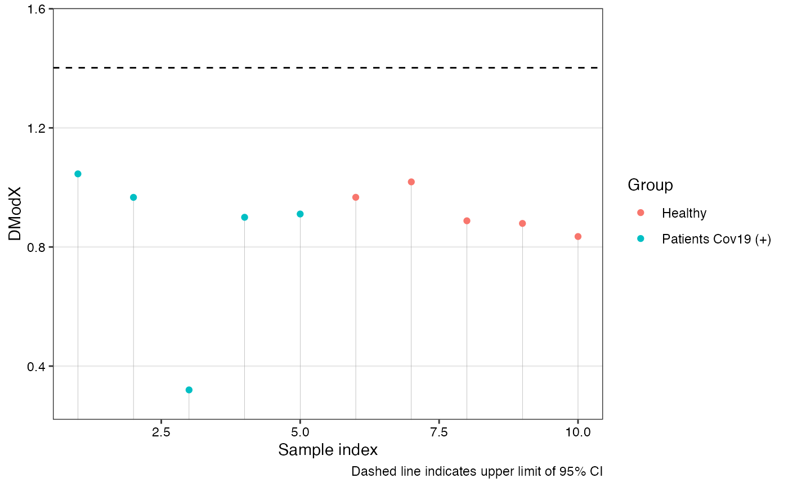

Calculates the orthogonal distance of each observation to the OPLS model in X-space. The DModX is used for identifying outliers.
Arguments
- mod
An OPLS model object of class OPLS_metabom8.
- plot
Logical. If TRUE, a plot of DModX values with a cutoff line based on a t-test is shown.
Value
A data frame with columns:
- ID
Sample index
- DmodX
Distance to the model in X-space
- passedT.test
Logical. TRUE if within the 95\% confidence interval
Details
DModX is calculated as the scaled root-mean-squared residual. An approximate upper 95\% confidence limit is drawn using a one-sided t-test.
References
Bylesjo, M. et al. (2006). J. Chemometrics, 20, 341–351.
Wold, S. (1976). Pattern Recognition, 8, 127–139.
Examples
data(covid)
X <- covid$X
an <- covid$an
model <- opls(X, Y = an$type)
#> Performing discriminant analysis.
#> Reducing k to 5 due to small group size (min n = 5).
#> An O-PLS-DA model with 1 predictive and 1 orthogonal components was fitted.

dmx <- dmodx(model)
